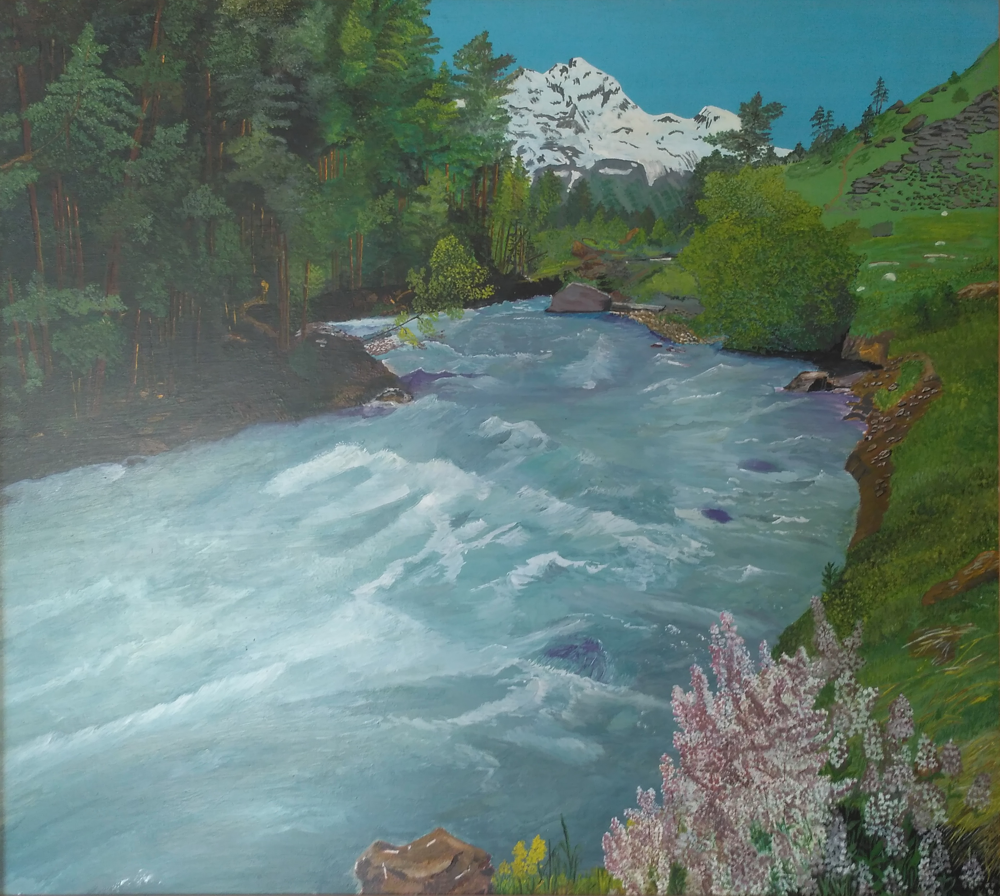

Горная река
На фоне неба голубого Застыли горные вершины. В лучах рассвета золотого Стоят безмолвно исполины. Из каменистого ущелья Река разбег свой набирает. И, как отшельник в темной келье, Своё рожденье обретает. Вгрызаясь в горные каскады, Стремится вниз к морским просторам. Взбивая в пену водопады, Свою красу являет взорам. И лишь в обьятиях равнины, Вздохнув устало, бег сбавляет. А горизонт седой пучины Взор, устремленный вдаль, ласкает. Н.Артемова